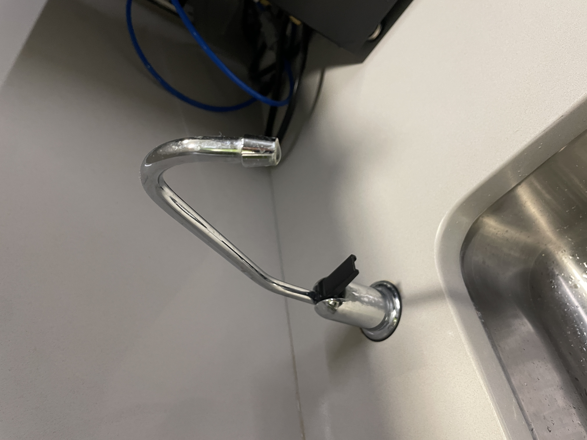
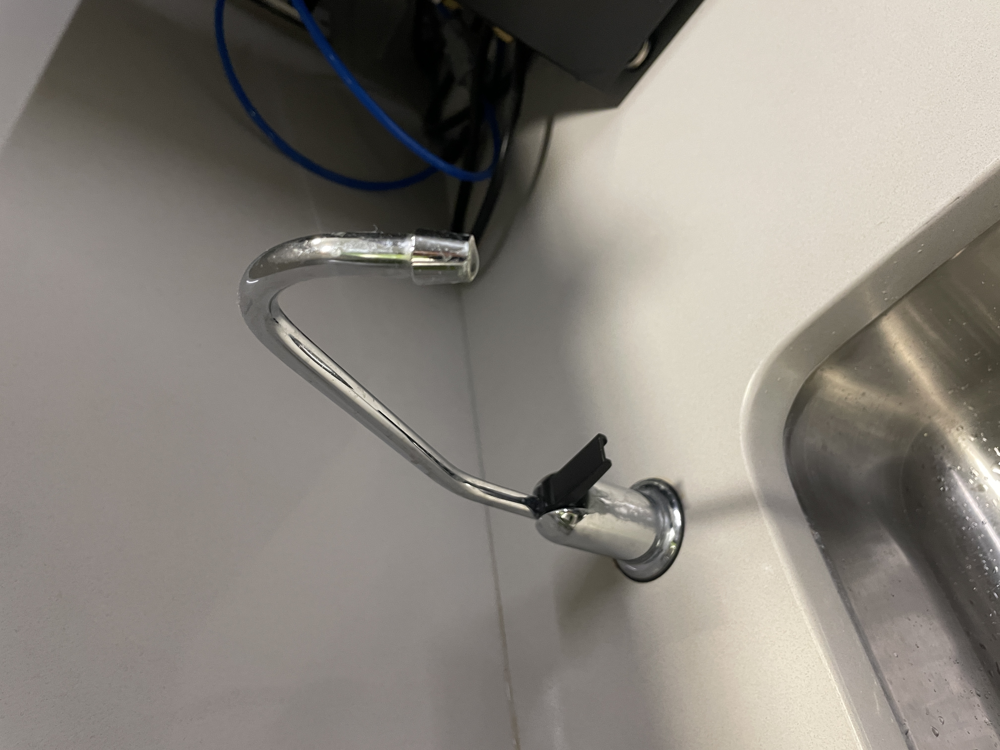
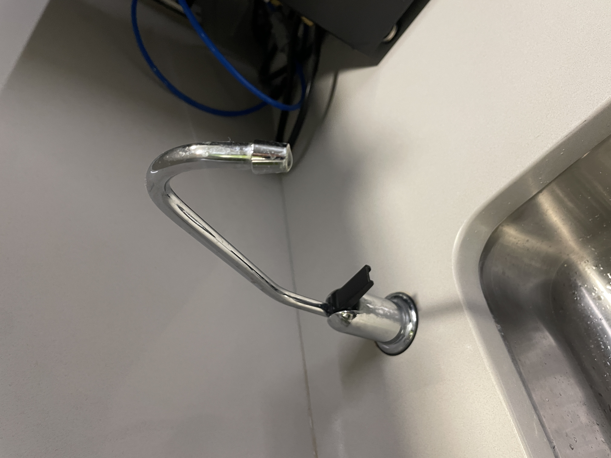
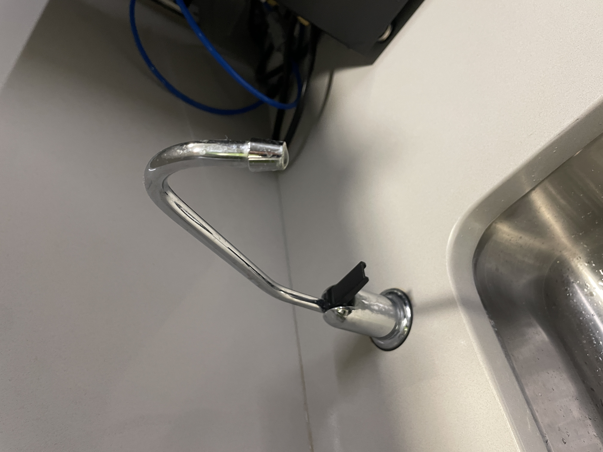

1. How do you usually get drinking water?
dorm water station, Britas, dining halls, or academic buildings
2. What influences your choice of where to fill your water bottle?
convenience (distance and ease of use), cleanliness in / around filter, and water taste
3. Have you used the bottle refill stations in your dorm? If so, please describe the experience?
depending on station type, either very convenient and efficient or distrust in them entirely
4. What do you think about the taste, convenience, and reliability of this option?
convenience is huge plus, but major concerns with filter maintenance, location inconvenience
5. If your dorm lacks a refill station or filtered dispenser, how do you manage?
rely on Britas, external sources, or wait until very thirsty then use dorm station
6. Have you faced any challenges in getting clean drinking water? If so, what were they?
outdated filters, distant (3+ floors of stairs) refill stations, extreme dirtiness around filters
7. Has your experience with dorm water access met your expectations? Why or why not?
users who live in newer dorms satisfied, everyone else extremely disapointed
8. If you could improve aspects of water access accross campus, what would they be?
multiple refill stations in dorms and increased accessibility
Henry is a freshman, who lives in one of the nicer dorms on campus. He lives on the same floor as a clean water botter refilling station, so he is never walking around campus thirsty. Happy Henry represents about half of the student population, those who live in newer dorms with easy access to clean water and are very happy with that proximity.
| Thinks | Feels | Says | Does |
|---|---|---|---|
| Ooo, I'm so thirsty. I definitely need to fill up my water bottle before I leave my dorm.
I shouldn't have bough a Britta because I barely use it. Brown's dorms are so good to freshmen! |
Thankful I live so close to a water refilling station
Happy with how the water tastes in my dorm Sad because my dorm next year might not have the same ammenities |
"I don't need to fill up water here, I'm can just do it at home."
"Does anyone need me to fill up their water bottle for them?" "I just filled up water in my dorm, so I don't need to go again." |
Uses dorm water station everyday
Fills up water bottle before leaving dorm Bought a new tote bag to carry his heavy water bottle |
Nonplussed Natali represents the other half of the student population who has to go to extreme lengths (5+ flights of stairs or the nearest academic building) get clean drinking water. Most times, the sink that houses the water faucet is left extremely dirty by the other students living in her dorm she is unable to use that faucet. This experience leaves her very disapointed and dismayed with her living situation.
| Thinks | Feels | Says | Does |
|---|---|---|---|
| I'm so thirsty, but I don't want to walk down 5 flights of stairs to fill up my water bottle.
Why doesn't my Britta fit under the sink? The kitchen sink better not be dirty. If it is, I won't be able to fill up my water bottle there. |
Hate towards Brown ResLife for not updating the water stations in my dorm
Disgust because the water in this academic building tastes so bad but the options are slim Knowledgeable becauase I now know where all the good water is on campus after having to search for it |
"Can you wait for me? I need to fill up my water bottle"
"Is the dining hall still open? I'm so thirsty."" "Is there a water refill station in this building?" |
Fills up water bottle whenever I can
Goes to bed thirsty if I am too tired to fill up water Goes out of my way to get water before sporting events |
This storyboard was made with the help of Boords AI Image Generators.
Nonplussed Natali sits her in dorm late at night. Thirsty, she goes to reach for her waterbottle and grows upset when she realizes is it empty.
Berudgingly, Nonplussed Natali makes the brave decision to walk to her dorm's water bottle refilling station, which is located down 5 flights of stairs.
She finally arrives to the kitchen in the basement only to discover the sink is filled with dirty dishes left by her peers.
Out of breath and growing increasingly dismayed, Natali climbs back up the 5 flights of stairs to retrieve her coat and brave the outside weather.
Now warm and bundled up, Natali goes outside to find the nearest open academic building with a water bottle filter.
After trying building multiple buildings, Natali finally finds a waterbottle filter and can cletch her thirst but is still very nonplussed.